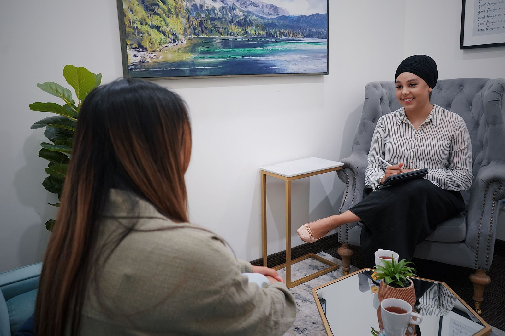

01
Terapia psicológica
Un espacio de escucha profesional para comprender lo que te pasa, elaborar experiencias y construir recursos propios.
Psicología · bienestar · desarrollo personal
Integramos distintas estrategias terapéuticas para acompañar cada proceso con honestidad profesional, seguimiento y una mirada humana.
Honestidad profesional
y acompañamiento real
Una mirada integral
Estrategias personalizadas
Seguimiento periódico
Un abordaje que se adapta a vos
No todas las personas necesitan lo mismo. En CITA articulamos diferentes propuestas para encontrar una manera de trabajar coherente con tu momento, tus objetivos y tu historia.
Orientación y sostén para atravesar cambios, decisiones o momentos que necesitan una mirada más clara.

Trabajar con honestidad también es decir con claridad qué estamos haciendo, para qué y cómo seguimos.
Ese compromiso orienta cada acompañamiento en CITA.
Nuestra manera de acompañar
Cada proceso parte de escuchar con atención. A partir de ahí, elegimos estrategias terapéuticas acordes y construimos un recorrido que pueda revisarse y comprenderse.
Un vínculo basado en la claridad, el respeto y objetivos posibles.
Instancias de seguimiento para registrar avances y ordenar el camino recorrido.
Recursos que se eligen según la singularidad de cada persona y situación.
Dar el primer paso
Contanos brevemente qué te gustaría trabajar o por qué servicio querés consultar.
Conversamos para entender tu necesidad y encontrar la propuesta más adecuada.
Acordamos el turno directamente por WhatsApp, de forma cercana y clara.
Respondemos por WhatsApp al +54 9 11 4058-1830
Antes de comenzar
Si tu consulta no está acá, escribinos. La orientación inicial también forma parte del acompañamiento.
No hace falta que llegues con una respuesta definida. Podés contarnos qué estás atravesando o qué querés trabajar y te orientamos sobre la alternativa más coherente.
Los turnos se conversan y coordinan directamente por WhatsApp al +54 9 11 4058-1830.
Son instancias de seguimiento que permiten ordenar lo trabajado, revisar el proceso y dar claridad sobre los próximos pasos cuando corresponda.
No. Se presentan como una práctica complementaria de bienestar y relajación; no reemplazan indicaciones médicas, psicológicas ni tratamientos profesionales.
Cuando sientas que es el momento
Escribinos para consultar por un servicio, despejar una duda o coordinar tu primer turno.
Hablar con CITA por WhatsApp